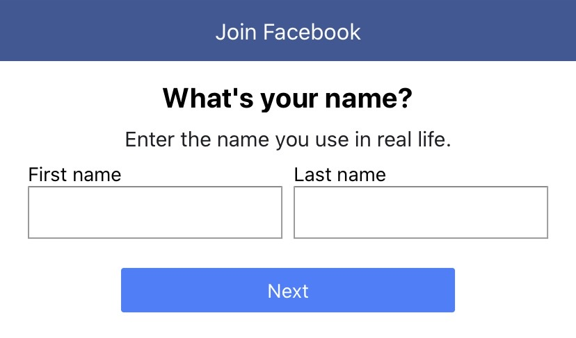
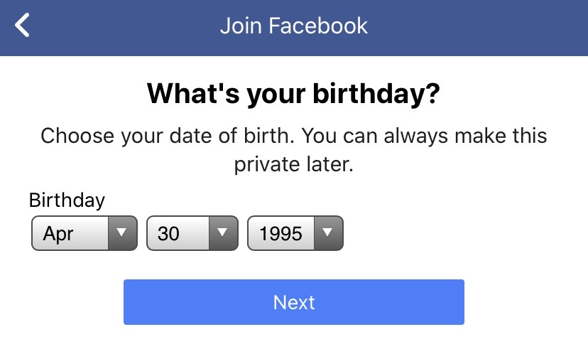
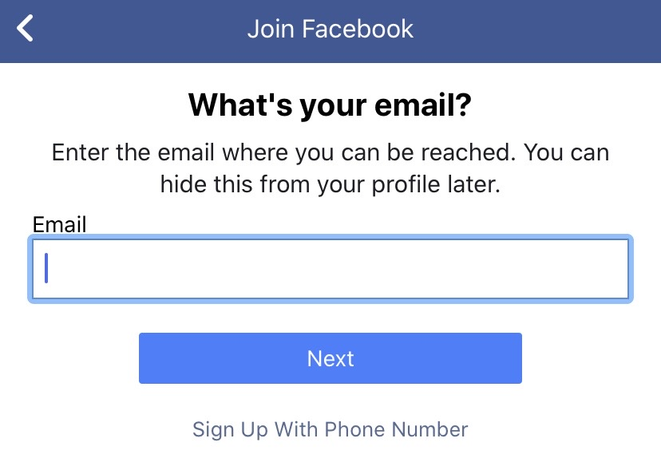

Facebook is a social media platform that allows users to connect with friends, colleagues or even strangers online. Users can share pictures, videos news articles or status's with their friends.
Registration is quick and easy, just enter your email and then create a password. All that is left after that is Adding things like your profile picture etc.
  All of the functions of Facebook are quite basic and easy to find, you simply like, comment and share posts by pressing the buttons underneath them.
For every platform of social media there is potential for misuse, for example people on the site can make fake accounts because you don't need a to verify your identificatiion when making a facebook account. In order to make an account your age must be over 13, this is flawed though because anyone can set their age to anything on Facebook.
Facebook has many useful features, some of which can be used for teaching and learniing purposes. The 'Groups' feature is brilliant in this sense, someone can make a group which is pretty much a private timeline, and then invite other users to join the group. Members of this group can then or each other to see. So for a class, the lecturer could post pdf douments with lectures or assignments. Students could also post any questions they may have.